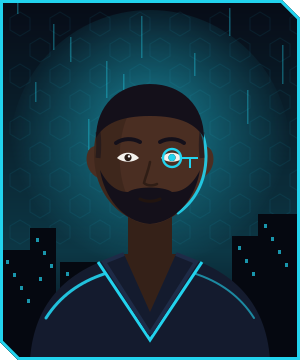
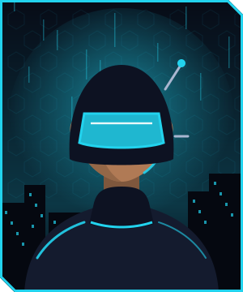
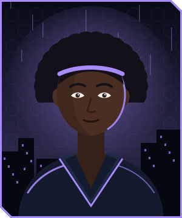
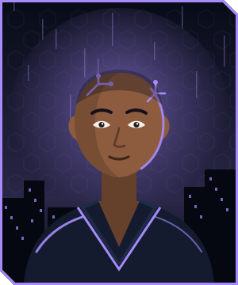
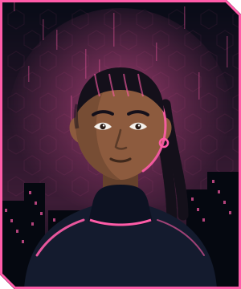
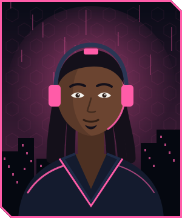
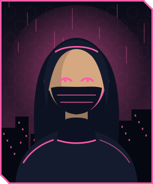

Kestrel
Runner · Architecte
Algorithmes et boucles
« Un bon plan vaut mille lignes de code. »
Algo ◆◆◆Réseau ◆◇◇Données ◆◆◇
~/charte
Une seule identité pour le site et pour les documents imprimés : un univers de runners et de réseau la nuit, inspiré du cyberpunk, entièrement dessiné pour ce site. Le décor sert la pédagogie et ne passe jamais devant le contenu.
#0B1020 texte courant#343E54 texte secondaire#586276 légendes, notes#7D879B traits utiles#F1F3F7 fond du code#070B16 fond obscur#22D3EE écran obscur #0B6378 papier · 6.8:1#FF5CA8 écran obscur #A3155C papier · 7.4:1#A78BFA écran obscur #5B2BB5 papier · 8.5:1#34D399 écran obscur #0E6B47 papier · 6.5:1#FB923C écran obscur #A33A0B papier · 6.6:1#38BDF8 écran obscur #0B5A94 papier · 7.2:1#FACC15 écran obscur #7A5200 papier · 6.9:1#818CF8 écran obscur #3F3DB8 papier · 8.2:1#A3E635 écran obscur #4B6B0A papier · 6.2:1#F87171 écran obscur #A61B1B papier · 7.5:1#94A3B8 écran obscur #4B5567 papier · 7.5:1Classe du <body> d'un document : SNT niv-snt (bleu), NSI 1re niv-1re (violet), NSI Tle niv-tle (orange), PP niv-pp (vert), Autres niv-autres (jaune). Elle colore les termes clés, les numéros d'exercice et les filets.
Chakra Petch — titres, étiquettes, numéros
Atkinson Hyperlegible — le texte : conçue pour les lecteurs malvoyants, elle distingue I, l et 1, O et 0.
JetBrains Mono — le code : for i in range(10): print(i)
Les trois polices sont dans assets/fonts/ (licence SIL OFL) : aucun appel à Google Fonts, le site et les fiches fonctionnent hors ligne.
Feuille commune : assets/fiche.css. Modèle à copier : la fiche Python de SNT (2 pages) ; document long : le TD 1 de POO.
Run 01 · ◆◇◇
Compétence travaillée
Trait plein, haut épais, vert : le cours à retenir.
Barre à gauche, vert : un mot du vocabulaire.
Double barre, bleu : la démarche pas à pas.
Tirets, violet : l'idée à retenir.
Pointillés, ambre : une aide pour avancer.
Barre hachurée, rouge : l'erreur classique.
Une question numérotée, suivie de lignes de réponse pointées :
for i in range(3): # mots-clés en gras print("run", i)
Neuf runners originaux. Trois profils : Architecte (construire des programmes), Analyste (données et réseaux), Hacker (trouver la faille, puis la réparer). Dans chaque profil : une femme, un homme et une personne indéterminée. Chaque document est guidé par un runner (bloc titre) et ses coups de pouce peuvent être signés.
Pour que chaque élève devienne runner : Ma carte de runner (4 cartes à remplir par page) et les 9 cartes de l'équipage au format carte à jouer, au trait, pour une impression en noir et blanc.
Runner · Architecte
Algorithmes et boucles
« Un bon plan vaut mille lignes de code. »
Algo ◆◆◆Réseau ◆◇◇Données ◆◆◇

Runner · Architecte
Programmation objet
« Chaque objet a sa place. »
Algo ◆◆◆Réseau ◆◇◇Données ◆◆◇

Runner · Architecte
Web et interfaces
« Si ça ne s'affiche pas, ça n'existe pas. »
Algo ◆◆◇Réseau ◆◆◇Données ◆◆◇

Runner · Analyste
Données et bases de données
« Les données ne mentent pas. Les requêtes, parfois. »
Algo ◆◆◇Réseau ◆◇◇Données ◆◆◆
Runner · Analyste
Représentation des données
« Tout finit en 0 et en 1. »
Algo ◆◆◇Réseau ◆◆◇Données ◆◆◆

Runner · Analyste
Réseaux et protocoles
« Toute route mène quelque part. »
Algo ◆◇◇Réseau ◆◆◆Données ◆◆◇

Runner · Hacker
Débogage
« Une erreur, c'est un indice. »
Algo ◆◆◇Réseau ◆◆◇Données ◆◇◇

Runner · Hacker
Systèmes et ligne de commande
« Le terminal, c'est la liberté. »
Algo ◆◆◇Réseau ◆◆◆Données ◆◇◇

Runner · Hacker
Sécurité et cryptographie
« Personne n'est à l'abri. Surtout pas moi. »
Algo ◆◆◇Réseau ◆◆◇Données ◆◆◇
| Document | Runner guide | Coup de pouce signé |
|---|---|---|
| SNT · Fiche Python et Compute-it débranché | Kestrel (architecte, elle) | Mwezi (analyste, indéterminé) |
| NSI Tle · TD 1 de POO | Vector (architecte, il) | — |
| NSI Tle · TD 2 de POO | Nova (analyste, elle) | — |
| Prochains documents | Les runners pas encore utilisés en priorité : Pixel, Byte, Nyota, Mistral, Zéro. | |
| Fichier | Rôle |
|---|---|
assets/charte.css | Polices et couleurs communes, carte de runner. Chargé par toutes les pages. |
assets/style.css | Le site (accueil, rubriques), affichage clair et obscur. |
assets/fiche.css, assets/fiche.js | Documents A4 : encadrés, exercices, code, barre d'outils (Retour, Projeter, Imprimer). |
assets/equipage/, assets/equipage.js | Portraits des runners (nuit et trait) et section « L'équipage » de l'accueil. |